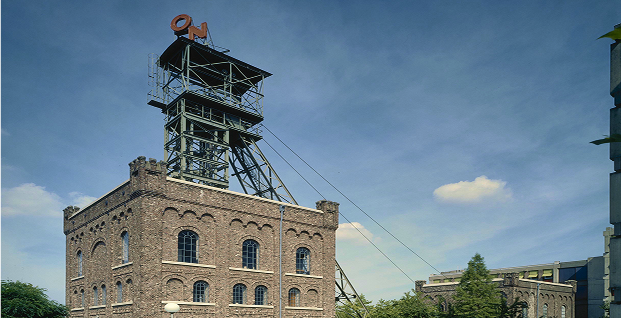
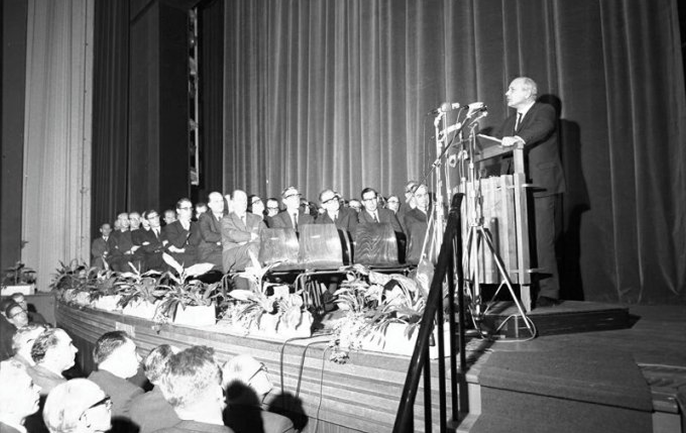
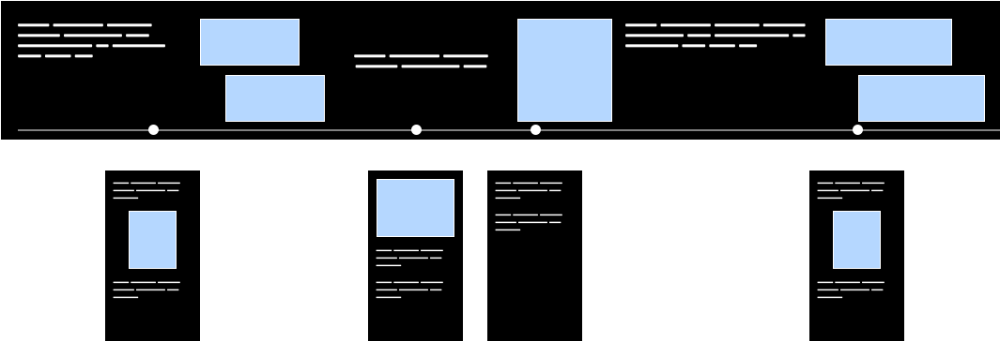

To better understand the topic, we visited mining museums and explored the history of Limburg’s mining industry firsthand.


An interactive installation that encourages students to discover unexpected connections between modern research topics and books from the university's historical collection.
DURATION
10 weeks
TEAM
4 students
CLIENT
Maastricht University Library
- Special Collection
The Central Bureau of Statistics struggles with making their data engaging, most people see it as
boring or too plain to really pay attention to.
They asked us to explore how their statistics could be presented in a more visually interesting and
appealing way.
For this project, we focused on data about the local mining history in the Limburg province, with
the goal of turning this information into something people actually want to explore and interact
with.
To better understand the topic, we visited mining museums and explored the history of Limburg’s mining industry firsthand.

We also spoke with people who lived during the mining era, gaining personal insights that added
depth to the data.
Finally, we engaged with our target audience to understand what captures their attention and
what makes them interested in this kind of information.
After the research we discovered most students already knew the collection existed, but did not see
how old books could be relevant for their current studies.
Students also expressed interest in finding unique and surprising sources, but said they did not
have time to search for them.
With these insights we can start the creative provcess.
PEOPLE WANT INTERACTION AND IMMERSION
THE STORY OF THE MINING ERA IS VERY IMPORTANT TO THE LOCALS
Old books feel irrelevant TO THEIR TOPIC

Before we got to our final concept, we went through many iterations.
For example, our first prototype presented users with a list of books related to their topic of choice.
However, this approach
did
not create the sense of an unexpected surprise we were aiming for.
Two weeks before the final deadline we decided to redesign the interaction and introduce the card
metaphor.
Drawing a card reinforces the idea of discovering something unexpected.

We created an interactive multimedia story that lets users scroll through the history of Limburg using
text, video, audio, and images. The format is designed to increase immersion and build a stronger
emotional connection with the region’s past and its people. We also integrated statistics provided by
the client directly into the narrative to ground the story in real data.
The project focuses on the history of Heerlen, a city often associated with a negative reputation. We
explore how the mining industry shaped both its development and the public perception it carries today.
Users can dive deeper into specific parts of the story if they want more detail. This keeps the main
experience clear and digestible, while still offering depth and source material for those who are
interested.